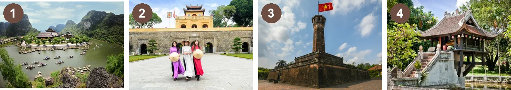

Looking back & Project
Lesson 8 — How can we preserve our heritage?
6Four stops in 45 minutes
- 🖼️
Memory gallery
Warm-up
5 min - 🔁
Looking back
Sounds · words · grammar
12 min - 🏛️
Project
Preserve our heritage
25 min - ✅
Wrap-up
Now I can…
3 min
Warm-up
Memory gallery
5 minutesWhich heritage places can you recognise?

1 · 2 · 3 · 4 Trang An · Thang Long Imperial Citadel · Ha Noi Flag Tower · One Pillar Pagoda
Looking back
Pronunciation · vocabulary · grammar
12 minutesIntonation
1. The trip to Hoi An Ancient Town was amazing. … was amazing. ↘
2. Turn off the air conditioner. It wastes too much electricity. … conditioner. ↘ … electricity. ↘
3. A boat tour is the best way to experience wildlife habitats. … habitats. ↘
4. In Ha Long Bay you can go swimming, diving, and fishing. swimming ↗, diving ↗, and fishing. ↘
Our heritage
1. Many ancient houses in the city are not well preserved / well promoted because of changes over time and bad weather. well preserved
2. His historical / historic novels are based on events that happened in the early 19th century. historical
3. Older generations worry that folk / festival music and dances will die out because young people only listen to pop music. folk
4. The heritage site is promoted / protected as a tourist destination on social media. promoted
To-infinitive clauses
1. Mai went to Soc Son because she wanted to attend the Giong Festival. Mai went to Soc Son to attend the Giong Festival.
2. The first place that you can visit on the trip is Hue Imperial Citadel. The first place to visit on the trip is Hue Imperial Citadel.
To-infinitive clauses
3. Our music teacher gave lessons in xoan singing because she wanted to help us appreciate our cultural heritage. Our music teacher gave lessons in xoan singing to help us appreciate our cultural heritage.
4. The most famous site that you can see is the old bridge across the river. The most famous site to see is the old bridge across the river.
Project
How can we preserve our heritage?
25 minutesChoose a type of heritage and propose ways to preserve it

1. What is the heritage? Where is it? Is it cultural or natural heritage?
2. What is it famous for?
3. How important is it?
4. What can we do to preserve it?
Presentation builder
Introduce: Our chosen heritage is … located in …
Describe: It is famous for …
Explain: This heritage is important because …
Persuade: We suggest … to preserve it for future generations.
Choose the most practical plan
- 📋
Facts
clear and accurate information
- 🛠️
Solutions
useful and realistic actions
- 🗣️
English
good vocabulary and speaking
- 🎨
Creativity
visual impact and teamwork
Tick ✓, ✓✓ or ✓✓✓
- intonation ↘ ↗
- heritage words
- to-infinitive clauses
- read about an ideas competition
- keep a conversation going
- listen to a tour guide
- write a leaflet
- ask for and give directions
- heritage around the world
- present a heritage plan
Homework
1. Do the Looking back exercises in the workbook.
2. Improve your project with your classmates’ feedback.
3. Get ready for Unit 7 — Education Options for School-leavers.